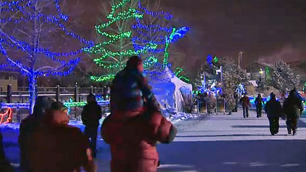
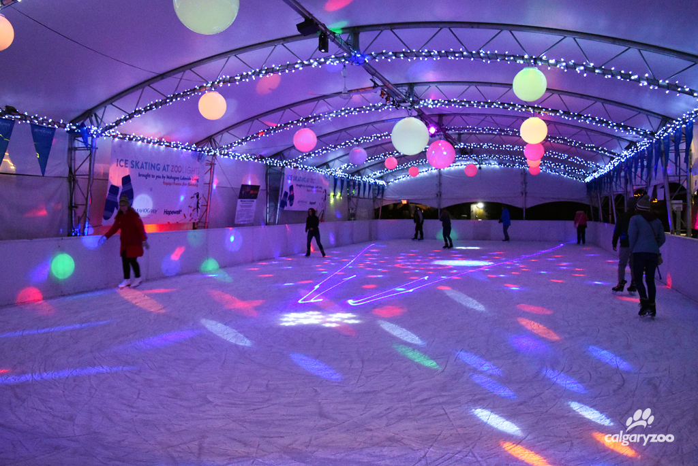
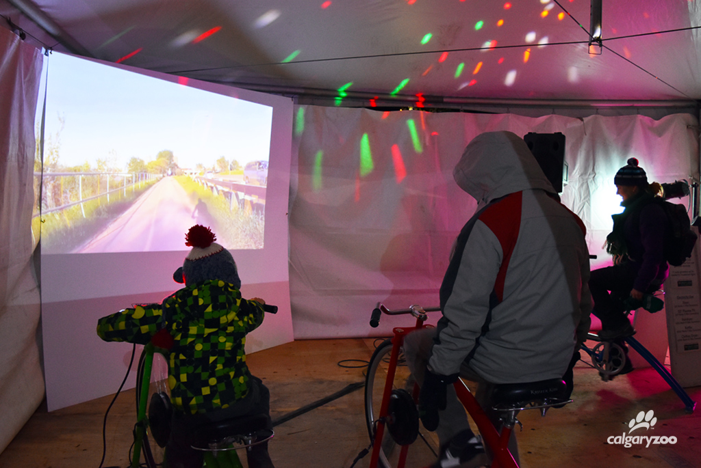
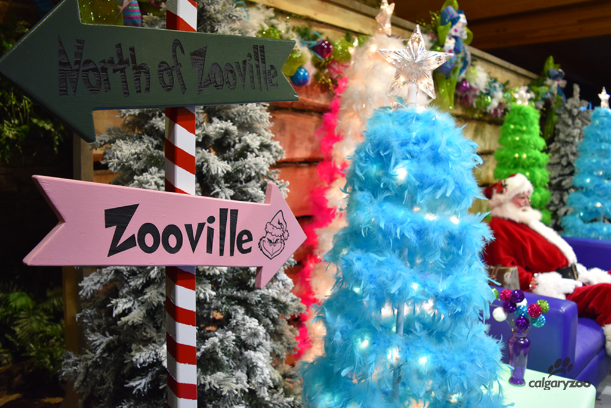
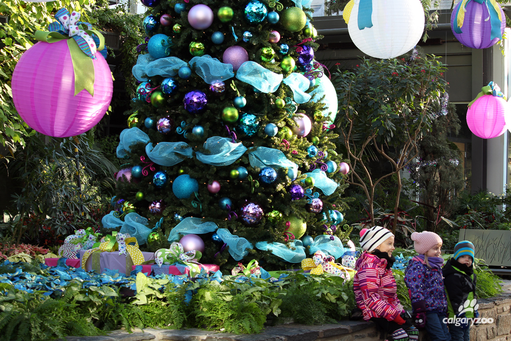

The Glow Starts With You
ZOOLIGHTS presented by Olympia Trust Company is back with more holiday cheer, festive spirit, and family fun than ever. Looking for things to do this holiday season? Come experience how 2+ million lights, 200 displays, crackling fire pits, and fun-filled activity zones (with many new additions!), transform the Calgary Zoo into a magical winter wonderland. Most magical of all, is its ability to bring friends and family together during the holiday season. Keep an eye on this page for more details to come!
Past Events



